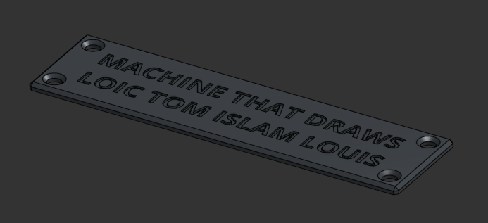

Crédits & Identification de la Machine
Pour finaliser le projet et signer notre travail, nous avons conçu une plaque d'identification personnalisée. Elle regroupe les noms des membres de l'équipe et le nom du projet MachineThatDraws.

Rendu CAO de la plaque d'équipe (Modèle de structure V4).
La Plaque d'Équipe (NOM PLAQUE V4)
Cette plaque, visible sur le rendu CAO ci-dessus, est conçue pour être fixée directement sur la base en bois de la machine, devant le boitier éléctronique et a coté du BAU. Elle adopte un design sobre et lisible, organisant les informations en colonnes : les matricules à gauche et les noms correspondants à droite.
Impression Bicolore Monobloc (X1C)
Cette plaque tirerparti des capacités de notre imprimante 3D, une Bambu Lab X1C, équipée de son système AMS (Automatic Material System) :
- Impression en une seule pièce : Contrairement à des plaques où le texte est collé après coup, cette plaque est imprimée en un seul bloc (monobloc).
- Gestion des couleurs : Nous avons opté pour une finition bicolore :
- Structure/Fond : Filament Noir classique.
- Texte/Détails : Filament Blanc pour contraster avec le noir.
- Technique : Le modèle CAO intègre le texte en gravure. Lors du découpage (slicing), nous avons programmé un changement de filament automatique à la hauteur de couche correspondante.
Signature du Projet :
Cette plaque n'est pas qu'un simple accessoire ; elle représente l'aboutissement de notre travail d'équipe et certifie que la machine a été conçue et assemblée selon nos standards de qualité.
Cette plaque n'est pas qu'un simple accessoire ; elle représente l'aboutissement de notre travail d'équipe et certifie que la machine a été conçue et assemblée selon nos standards de qualité.